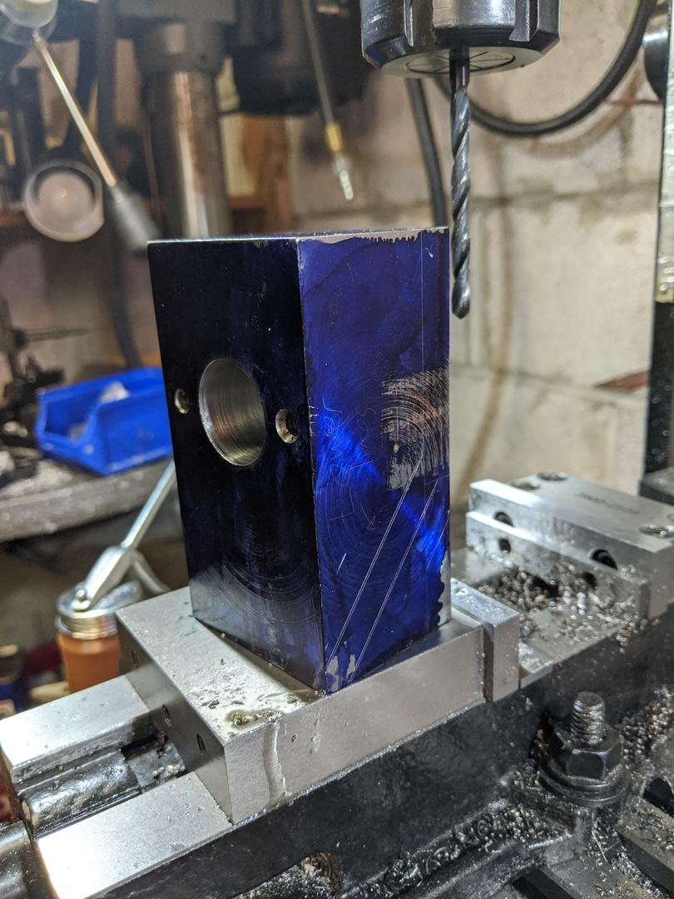
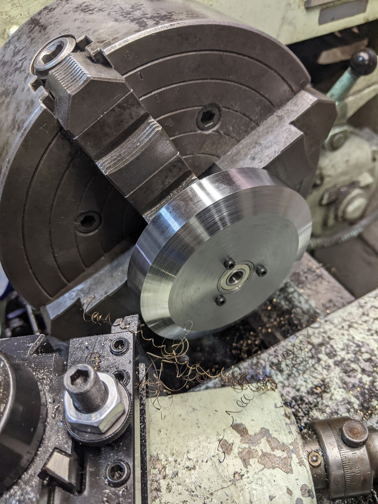
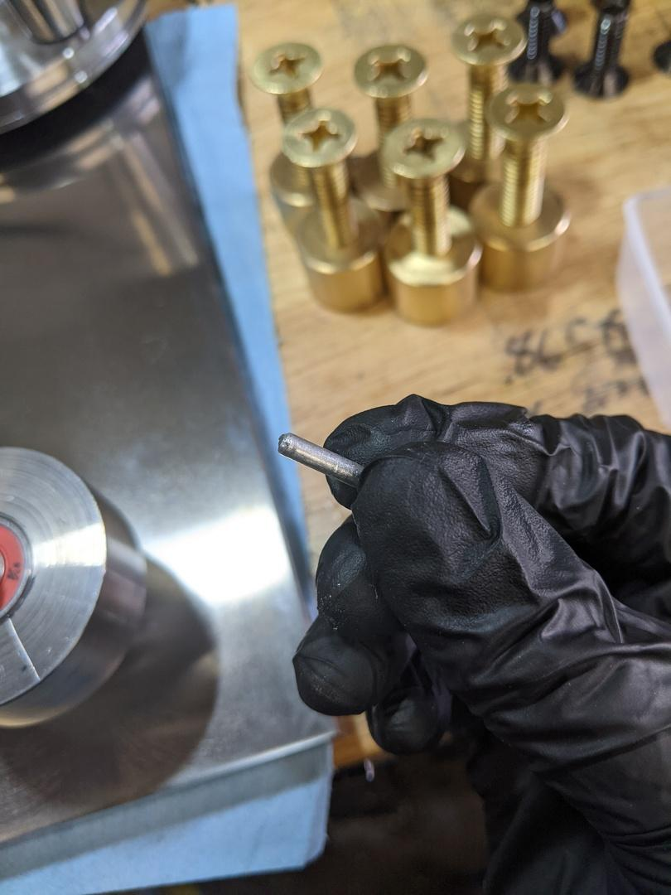
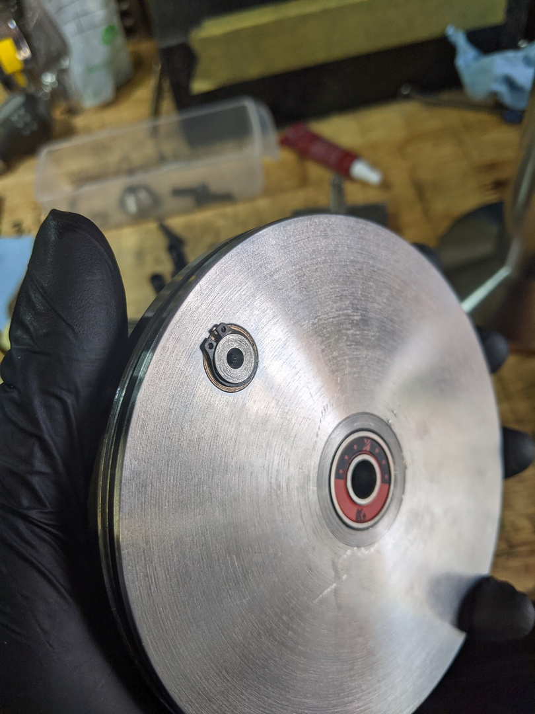
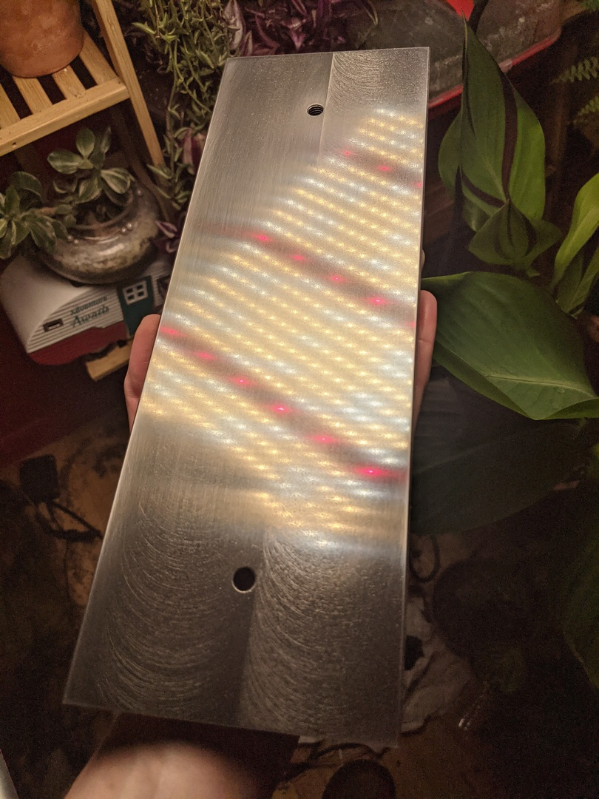
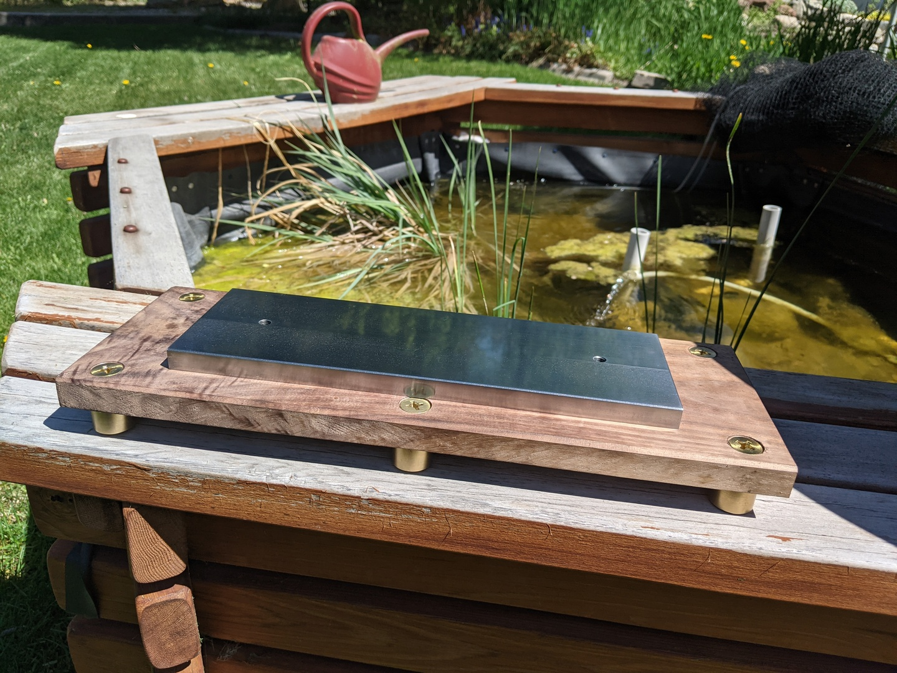
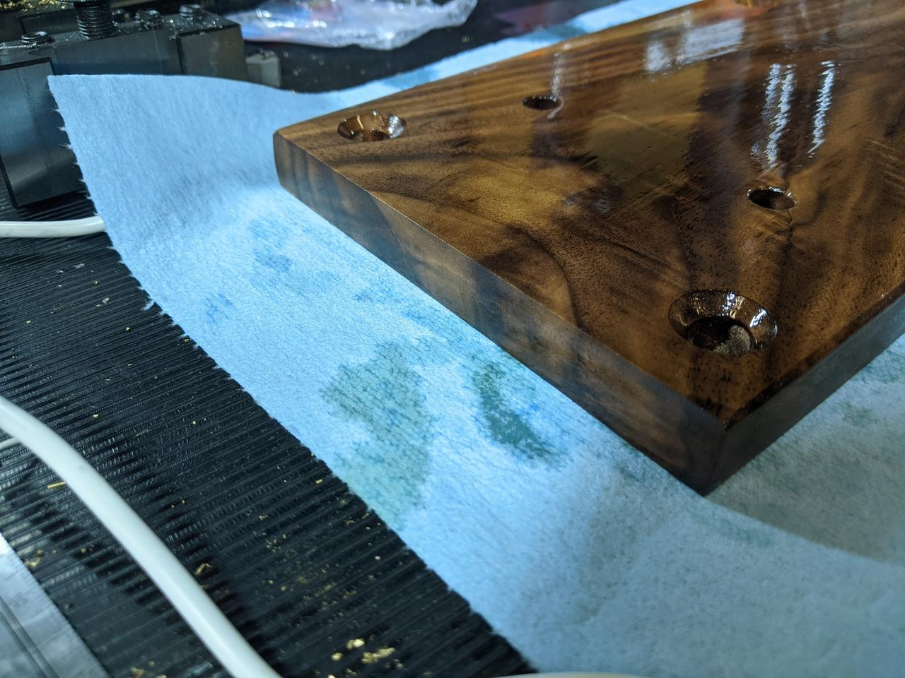

The Solid Steel Yarn Winder
This is a bit of a strange direction for this blog to take! Over the past few years, I've taken up machining as a hobby. I've found that machining is incredibly emotionally restorative for me and I've really come to love it. I'm still heavily involved with Linux and networking and container orchestration and all that jazz, but metalworking has captured my interest in a way nothing else ever has. So, onto the meat of this!
I made my girlfriend a yarn winder for her birthday. She had always wanted one but had never gotten to digging around. I wanted to get her one, but quickly found that I wasn't happy with the commercially available winders out there. They were all either cheap plastic garbage or expensive wooden things. I wanted to get her something nice, but I had my reservations. I liked the wooden winders, but there were some key components I felt should have been made out of metal. This wasn't available, so I decided I would build the most overkill yarn winder possible -- one made from solid 4000 series alloy steel. This post is going to cover the build process. First, I'd like to go over some background info and what a yarn winder is.
Yarn winders
A lot of the folks reading this might not know much about yarn winders. It's easy to figure out what they do based on the name, but they're actually a bit more complicated than you might expect. When I saw my first yarn winder, I didn't get why it looked the way it did:

You'd expect a yarn winder to be something like a vertical tube that just spins to wind up a ball of yarn, so the arrangement above seems a little overcomplicated. There's the large, angled bracket that spins around a stationary peg. The yarn spindle is attached to that angled bracket with a bearing, meaning it can spin freely. The spindle disc is pushed up against the peg in the middle, meaning it also spins as it's whirling around. Here's a video that shows the effect in slow motion:
The disc in this video has a large black sharpie mark on it, showing the slow rotation of the spindle as the whole angled bracket spins around.
This compound rotation leads to balls of yarn that are relatively consistent in size and can be used from the center out. Rather than pulling the yarn from the outside (which makes the ball wobble around obnoxiously), you can pull the yarn from the center. You can also take large balls of yarn and split them up into smaller, more manageable balls, which is useful for knitting or crocheting projects with many different colors. A yarn winder is also essential when you have fancy yarn that comes on unwound "hanks," since using an unwound hank is very, very frustrating.
I've probably left out some crucial details or other great uses here, but I've only dabbled with crochet. Onto the design and build!
Design
I am not a mechanical engineer. It's actually worse than that, since I'm not really mechanically inclined at all. I didn't want to design my own winder and have it crash and burn, so I decided to copy an existing design. Here's what I started with.

This looked like a nice, simple design. There were some features that were clearly targeted towards 3D printing, but most parts seemed like they'd be easy enough to machine. What really sold me is that the designer included STEP files, meaning it would be a cinch to remodel the thing for machining.
Here's what I arrived at:
It's generally similar, although I made these changes:
- The drive pulley doesn't have those weight-saving spokes
- Fasteners now thread directly into parts, rather than relying on nuts
- The bearing shafts are now proper shafts and not screws
- The 624 and 606 bearings have been replaced by 608 bearings
- The spring-loaded drive cone has been redesigned to actually function as intended
- The handle spins in an oilite bronze bushing and is retained by a circlip, rather than a bearing and a fastener
There are probably other changes I've made and forgotten about, so I'll edit this post if I think of them.
Build
This build took a while. I'm not a very good machinist, I don't have a lot of tools, and the tools I do have tend to be pretty small and/or cheap. I'm also not very good at remembering to take pictures, so there are going to be parts that are just a lot of text.
The first part I decided to make was the angled bracket.
Have you ever decided to do something the hard way? I decided to do this the hard way. The stupidly, terribly, awfully hard way. First, I lopped off a chunk of some 4340:
Then I squared up the stock on my lathe and brought it to size:
I used my lathe because my mill (a Grizzly G8689) is not up to the task of removing 0.250" of 4340 steel. And yes, I am using carbide for this hideously interrupted cut. I probably burned up about $30 worth of inserts when squaring up this stock. I didn't have a bench grinder and I haven't yet learned how to properly sharpen HSS tools. I did go out and buy some HSS inserts later on, but I wasn't using them here.
After the block was to size, I drilled and bored the central hole on the lathe, and then moved over to the mill to drill the clearance holes for the socket head cap screws. I then marked out the stock:

I then set about milling the stock down to the lines.
This took forever. This was seriously the WORST way I could have gone about this. Remember when I said my mill wasn't up to the task of removing 0.250" of tough steel? That didn't stop me from using it to machine away 0.500". This was just

really
awfully
TERRIBLY slow.
Pictured here is my cool little sine table I picked up from a retiring tool and die maker. What's less cool is my clamping system. I'm using 1/4"-20 all-thread and some brass threaded inserts as nuts. I guess I didn't have any 1/4-20 hardware, so I made due with what I had. Other problems include a dull cutter made even more dull by constant rubbing, a setup with crappy rigidity, a mill that could only take .020" cuts at a time, and a lack of cleanliness. I really should have been cleaning up some of these chips as I went along.
Eventually, I got it to the line, but I don't have any photos of that. I was so tired and done by this point that I just failed to capture anything for a while.
You might be asking yourself one of these questions:
- Why didn't you just make this out of two pieces and then fasten them together?
Honestly, because that's just not as cool. I wanted this to be a single, fully machined piece of metal - OK, so why not weld it?
Because I don't know how to weld, and the only welding equipment I have is an old oxy-acetylene rig. - Fine, why not bend it and then machine it?
I don't have any bending equipment, nor do I have the space for it. - OK buddy, why not just use a saw to remove the bulk of the material?
I don't have a vertical bandsaw to do that. My horizontal bandsaw is horizontal only, and I don't know anyone who owns a metal-cutting vertical bandsaw.
The right thing to do probably would have been to ask a local machine shop to just deck off a bunch of the material on a big mill or saw, but I was doing this during the middle of a global pandemic and I didn't feel particularly social.
The rest of the build is mostly focused around bearing fits. First up was the disc that rides on the drive cone and spins the yarn spindle slowly:

You can see in the above photo that a bearing has been pressed in, and I'd like to take a moment to talk about how I underestimated how difficult it is to make a good bearing fit.
Bearings are incredibly precise things. They can spin crazy fast and perform incredibly well, but you need to make sure that they're being held correctly. In the case of a 608 bearing where the middle shaft is stationary and the outer housing spins under heavy load and low speeds, the shaft needs to be 0.3150" exactly. The housing that the bearing is pressed into has to be 0.8661" exactly, which is not easy to do on a lathe from the 1950s. I didn't grab any pictures from making the bearing housing, but it took well over two hours of careful measurement and small cuts with a boring bar. I managed to nail every single bearing housing fit, although I did screw up and make the bearing shaft for the yarn spindle .0002" small.
I didn't get photos of making all of these parts, but here's the angled bracket, the disc, a small bearing shaft, and the yarn spindle all together:
After this, I started making the "pulley", spring loaded drive cone, and drive shaft that all of this rides on. Here's a video of some nice chips I was getting when machining the drive shaft:
I didn't really get any good photos of this at the time, so here's some pictures from the future of how this all works.
There are 5 parts in this photo: the "pulley" (the large part with the threaded holes that spins on those bearings), the drive cone (stationary), the drive shaft (stationary), a spring, and a pin. The drive shaft has a (very sloppy) slot milled in it:
The drive cone sits on a spring which rests on top of the inner race of that bearing:

The drive cone is then retained by a small pin:

This keeps the drive cone from spinning, but lets it push up hard into the yarn spindle disc. It's a pretty neat little mechanism! It doesn't seem to work right in the original design, so I made a few tweaks here to get it functional.
At this point, the yarn winder project was put on hold while I made a set of Olympic-style dumbbells for my sister. My shop is also completely unheated, so I wasn't motivated to get back out for several months during the winter, and this is where the number of in-progress pictures really took a turn for the worse.
After getting back out to the shop, I made the drive shaft for the main drive pulley:
The bearing shaft and threads were overly long, but I wanted to hold of on cutting them to length until after the drive pulley and base plate were done as I was contemplating some design changes.
This is literally the only photo I have of making the main drive pulley 😅:
This also had two bearings in it, as well as a 0.500" reamed hole for a bronze oilite bushing. I made a handle with a 0.499" shaft to ride in that bushing. There's a small groove on one side for a circlip:

The original design just had the winder attached to a piece of plastic or wood. I had initially thought that would have been fine, but I realized around this point that the winder mechanism was too heavy and off-balance for this to work. I decided I'd make a metal sub-plate that would provide some rigidity for the machine and reduce the stress on the wood.
I grabbed what I thought was some steel and started machining. The piece I had was too large to fit in my horizontal bandsaw and I didn't feel like being shaken to death by my Skilsaw, so I set it up on the mill:

That's a 1/2" solid carbide rougher, slotting .075" at a time through this random piece of plate. This is on my shiny, shiny new Precision Matthews PM-728VT so I don't have to water-torture my way through this stock.
You can also probably tell from the chips that this isn't steel, it's ductile iron. I had been using cutting oil, so gritty iron shavings got everywhere and I'm still cleaning them up.
After I had the stock roughly to size, I needed to get it down to final dimensions and try to leave a nice surface finish. I had received this ridiculous cutter as a part of an eBay lot, so I figured I'd give it a go:
I mean, just look at this glorious ladder of steel! It's a 2" Niagara roughing endmill and it's hilariously large for my machine. I mounted it up in my mill and got to machining:
Nice and smokey. The cutter was super sharp and left a pretty good finish on the sides:

I flipped to the faces, and the story wasn't as good...
So then I got to spend a lot of time at the lapping plate. This is a surface plate dedicated for lapping with sandpaper, so don't be alarmed:
I spent a lot of time here. All told, it took 10 hours of lapping to remove most of the tool marks on this piece of ductile iron. It looks like my mill head was out of tram, meaning my cuts weren't flat. Here are some progress pictures:

And that's where I left it. There are still some tool marks on the ends of the part, but my back was starting to hurt from all the lapping I was doing so I called it.
Next up, I made some little brass feet and then machined the wood:

I hate wood. The tools to work with it are loud, the sawdust makes me sneeze and gives me sinus infections, and it's just not cool like metal is. I knew I wanted a wooden base, though. The brass, black walnut, and steel would look great together and the wood might soak up a bit of vibration.
I gave the wood a good sanding down (120 -> 180 -> 220 on an orbital sander):
And then started applying Tru-oil. I actually really screwed this up the first time. My coats were incredibly thick and weren't drying:

I kept applying coats this way until it all went wrong. I had to sand off all of the finish and then retry. This time, I used much lighter coats until the wood was in a somewhat happy state.
With that, it was time to sand and polish all of the remaining components. I'm not Clickspring, so this means that they got a bit of time with some 320 grit emery paper and some grey Scotchbrite. I hit the brass components with Brasso (which I had never used before and hadn't realized was INCREDIBLY SMELLY thanks to the ammonia) and then laid everything out:
Once the wood had dried out, it was time to put it together! Note that there are some small Sorbothane washers and bumpers on the feet to soak up the vibration, because this thing is heavily off-balance. If I can get my hands on some tungsten then I'll machine a counterweight. In the meantime, the Sorbothane does an admirable job of soaking up the vibrations.

And of course, here's a video of it winding a ball of yarn:
So that's it! The solid steel yarn winder. Hopefully you've enjoyed this. I'll probably be back with more projects in the future, but I think I'm just about done writing for now.
Easy packet traces using remotecap
I hate taking packet captures. I end up taking a ton of them at home and at work. Frankly, this workflow sucks:
# Oh shoot, I need to take a packet capture. evan: ssh root@host.something.net host: tcpdump -i any -s 0 'not port 22' -w /tmp/foo.cap # In another terminal after making the traffic I want... evan: scp root@host.something.net:/tmp/foo.cap captures/foo.cap evan: wireshark captures/foo.cap
There's all kinds of garbage that can happen along the way:
- /tmp/ (or wherever you're capturing to) could fill up
- Somebody else could clobber your capture file (that's a fun one)
- You might forget to copy the new capture file over
And the whole affair just takes forever. I want live updates! I don't want to fill up precious disk space on my server! I want my capture file to be on my machine!
Enter remotecap, something I built because I was sick of this.
Here's the workflow with remotecap:
evan: remotecap -w captures/foo.cap host.something.net # Screen is cleared and capture size and rate of growth is # printed. # This can be disabled by using -q/--quiet # In another terminal evan: wireshark captures/foo.cap # Now, make the traffic you want to view and simply hit <C-r> in Wireshark
remotecap will ssh into the target server, run tcpdump, and then pipe the outback back over ssh to a file on your system. That's not all it can do, however!
Here's a more complicated example:
remotecap -w captures/some-weird-problem --user notroot --sudo \ --command-path /stupid/path/tcpdump \ --filter 'port 80 and port 443 and port 1234' \ --key ~/somerandomkey --packet-length 1234 \ --known-hosts None \ 10.0.0.5 1.2.3.4:2022 example.org:4561
This will run tcpdump on three machines simultaneously and put them in a folder named some-weird-problem as $HOST.cap, e.g. some-weird-problem/10.0.0.5.cap.
It also logs in as a non-root user and then uses sudo to escalate privileges on these machines. The other options are pretty self-explanatory for anyone that has used ssh or tcpdump. My favorite thing is that you can specify the ssh listening port per host using : to separate the host from the port.
Internally, remotecap is built on top of asyncio, using asyncssh to do ssh connections and stream the output and aiofiles to allow file I/O that won't block the event loop.
Because of this, it performs pretty well. I've been able to take captures on systems that are recieving 500 Mb/s or more.
To use remotecap, you need to have python >= 3.6 on your system. remotecap has been tested on Linux and should probably work on MacOS. I have no clue if this will work on Windows, so sorry there!
To install, simply do the following:
# You could do this with system Python, but that's not really a great idea. # All file paths below are just examples. You can put this # virtualenv wherever you want. evan: python3 -m venv ~/remotecap evan: source ~/remotecap/bin/activate # Make sure that you have libsodium installed. Install it using apt/dnf/pacman/zypper # This also might need a compiler if the wheels don't work. (remotecap) evan: pip install remotecap[recommends] # Bunch of garbage prints (remotecap) evan: remotecap --help
I may create packages for various distros using fpm at some point, but for now, just use pip.
If you run into any issues or just want to see the source, head on over to remotecap on Github.
Happy trails!
WCCP - Redundancy and clustering of caches and WAN optimizers
What is WCCP?
WCCP is a service offered on Cisco routers and switches that makes it simple to deploy web caches and WAN optimizers among other things. It offers a lot of functionality including failover, redundancy and clustering, and complete control of ports while requiring minimal configuration changes on the switch or router; almost all of the config is done on the cache or WAN optimizer, allowing your vendor to do what they do best. This power and configuration simplicity comes at the cost of a few pretty serious caveats. I'll get onto those, but first I need to explain how traffic flows. For those who already know WCCP, I'm going to be focusing on L2/Mask inbound redirection, so if you need guidance on GRE/Hash and/or outbound redirection, you'll want to look elsewhere. Also, this post is going to focus soley on caches. WAN optimizers have some trickery that I don't feel like covering right now, but there are some good guides out there on how to deploy those. Finally, I don't really want to cover how web caching works. I'll save that for another article.
How WCCP works (roughly)
Check out this diagram:
This is how I explain the flow of WCCP to customers. The client makes a request (1), the router redirects that request to the cache (2), the cache goes and fetches the request from the webserver via the router (3 + 4), the webserver responds to the cache (5 + 6), and finally the cache sends the response to the client (7 + 8). It's important for the traffic to flow in this "sideways T" configuration. If you don't do it this way, things will break. Next, a quick config primer.
WCCP config on the router or switch
The configuration for WCCP is stupid simple on the router. Let's say that in the example above, there are three VLANs. VLAN 10 is for the clients, VLAN 20 is for the cache, and VLAN 30 is for the internet. Next, let's say that we want to redirect port 80 TCP traffic (HTTP). WCCP uses service groups to allow you to redirect several ports at once. These can range from 0 to 100, but 0 is a special, static group that only redirects destination port 80 TCP traffic. On a router, it can also be written as web-cache. In this example, we'll use the web-cache service group. Here's what the config would look like on the router:
ip wccp web-cache
interface vlan 10
ip wccp web-cache redirect in
Seems too good to be true, right? Well, yes and no. That really is everything that's needed on the router. You'll need to configure your cache however. The cache needs to inform the router that it exists and that the router should send traffic to it. The cache needs to be set up with the same service group, and it needs to have the port you want to redirect. If you're using the web-cache service group then it must be TCP dest 80. I'm not going to show you this part because the configuration for a Superlumin cache vs. a Bluecoat vs. Cisco stuff is completely different.
So, with that said here's what's happening. WCCP will watch all packets coming in on VLAN 10. When it sees a packet that matches what the cache has told it to send over (in this case, port 80), it punts it over to the cache server at which point regular routing takes over. There are a couple different ways the traffic can get sent over to the cache, but in most cases just pick L2 redirect. It's the simplest and lowest overhead option. This is also configured on the cache. Now, onto the caveats!
Caveat Emptor
-
Circular redirection
This is a really easy trap to fall into. WCCP is stupid. Like, really, really stupid. If you tell it to redirect TCP port 80 traffic then by god it's going to do it. This means that if the cache is behind the interface that's redirecting traffic (VLAN 10 in our above example) then when the cache goes to make a request out to the internet, the router will send it back to the cache, and it will cycle on and on. There are two solutions to this problem.- Have a separate VLAN for the cache and the clients
- Configure WCCP with an ACL that prohibits redirecting traffic from the cache
If I had my way, I would always, always do option 1. it's cleaner and will always work, regardless of what router or switch you have. If you have to take the second route then it's imperative that you check the docs for your router or switch, because the ACL can have different requirements. Really though, just use option 1. Please.
-
Layer 2 Adjacency
When using L2 redirection, it's important that the cache be layer 2 adjacent to the router. When I first learned this my brain immediately thought what the hell does that mean? To put it simply, no routing can happen between the cache and the router. The cache could be hooked up to the router by twenty switches and it will work fine, but if any routing has to occur then L2 adjacency is broken and no redirection will happen. You can typically see this by runningshow ip wccp <service-group> detail, although this isn't the same across all routers and switches. -
Routers gotta route, yo
WCCP doesn't operate on switched traffic. What do I mean by that? Basically, if traffic is flowing through your router or switch without being routed to that router or switch then it's not going to redirect. WCCP is not transparent in this regard, as compared to a Linux bridge sitting in the flow of traffic. In addition, the clientside and internet facing side of the router or switch must be different subnets. That device needs to route.
Final thoughts
WCCP is awesome and complicated. This post doesn't touch on a lot of the finer details of the protocol. If you're going to be working with WCCP on a regular basis, I'd recommend reading through the Cisco doc I linked at the beginning of the post.
pyroute2 - Linux networking made easy
What is pyroute2?
pyroute2 is a Python library that uses Netlink sockets to interact with the Linux networking stack. It is, in my opinion, the single best way to do anything networking related on Linux machines. Beyond simple things like replacing subprocess calls to ifconfig to get and change networking information, it offers a fantastic way to monitor networking related changes (interfaces up and down, new neighbors) and perform actions based upon those. I'll show you how to do that in this post. First, you need to understand some things about Netlink.
Netlink basics
Netlink is super cool. With it, you can register a program to receive all Netlink messages, no polling required. There are quite a few different messages that Netlink can generate. I like to represent those as an enum in Python:
from enum import Enum class NetlinkEvents(Enum): # A new neighbor has appeared RTM_NEWNEIGH = 'RTM_NEWNEIGH' # We're no longer watching a certain neighbor RTM_DELNEIGH = 'RTM_DELNEIGH' # A new network interface has been created RTM_NEWLINK = 'RTM_NEWLINK' # A network interface has been deleted RTM_DELLINK = 'RTM_DELLINK' # An IP address has been added to a network interface RTM_NEWADDR = 'RTM_NEWADDR' # An IP address has been deleted off of a network interface RTM_DELADDR = 'RTM_DELADDR' # A route has been added to the routing table RTM_NEWROUTE = 'RTM_NEWROUTE' # A route has been removed from the routing table RTM_DELROUTE = 'RTM_DELROUTE'
This is not an all inclusive list of possible messages. If you want that, this is a good place to start.
Now that we have some Netlink events defined, let's put them to use by watching for new addresses. This is where we'll use pyroute2.
pyroute2 callbacks
First things first, let's import what we need from pyroute2. There are a couple of different ways to use pyroute2, but here I'm going to use IPDB.
from pyroute2 import IPDB ipdb = IPDB() # We'll use this later import pprint pp = pprint.PrettyPrinter(indent=3)
Next, we'll make our callback. This callback needs to have 3 arguments:
def new_address_callback(ipdb, netlink_message, action): if action == NetlinkMessages.RTM_NEWADDR.name: pp.pprint(netlink_message)
The first two arguments are fairly obvious, but the third one is a bit vague. action is basically the type of message, so we can use this to filter out the stuff we don't care about. Now, we'll fire things up!
addr_callback = ipdb.register_callback(new_address_callback)
register_callback returns the ID of the callback which you'll need to cleanly stop it, so make sure you capture that! To test, we'll pop on over to a shell and add an address to eth0.
[evan@goliath ~]$ sudo ip addr add dev eth0 192.168.2.50/24
Back in Python, we should now see something like this:
{ 'attrs': [ ('IFA_ADDRESS', '192.168.2.50'), ('IFA_LOCAL', '192.168.2.50'), ('IFA_LABEL', 'eth0'), ('IFA_FLAGS', 129), ('IFA_CACHEINFO', {'ifa_valid': 4294967295, 'ifa_prefered': 4294967295, 'tstamp': 3663995, 'cstamp': 3663995})], 'event': 'RTM_NEWADDR', 'family': 2, 'flags': 129, 'header': { 'error': None, 'flags': 0, 'length': 84, 'pid': 27963, 'sequence_number': 1478380920, 'type': 20}, 'index': 2, 'prefixlen': 24, 'scope': 0}
Once you're finished, you can stop the callback as such:
ipdb.unregister_callback(addr_callback)
Nice and simple, right?
Final notes
I've used pyroute2 both professionally and personally and have found it to be a necessity when dealing with any sort of Linux networking. I've barely scratched the surface of what it can do; check out the docs if you want to see how powerful it is. It's a really great library and I wish it was used more widely.
If you find any mistakes in this post, please let me know about them by emailing me at the address in the footer. I've simplified things quite a bit here to make this post easier to digest, so if I've cut out something important I'd like to fix it.